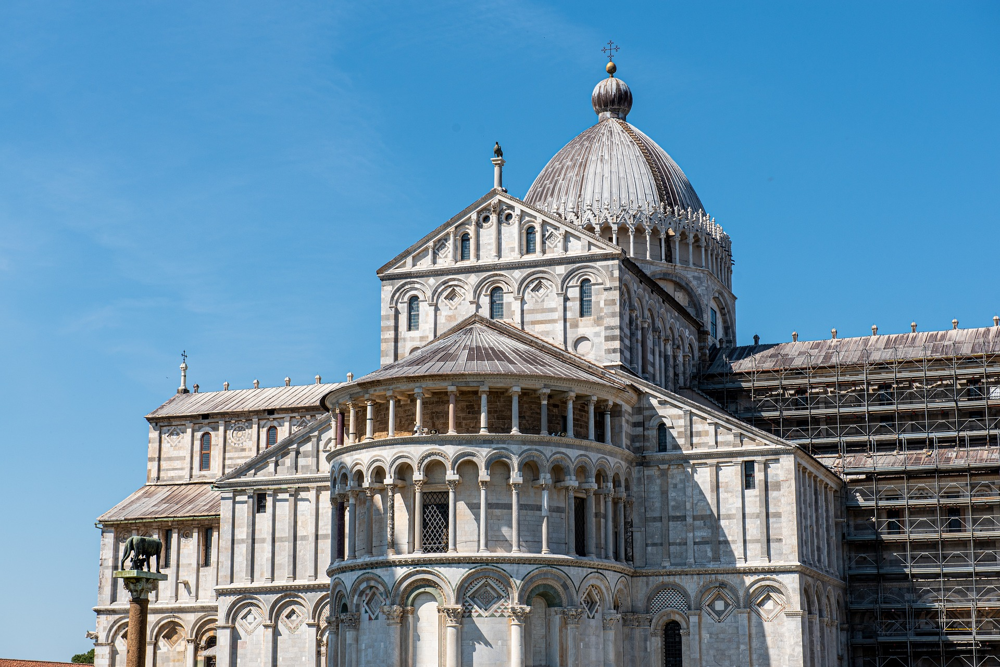

The Second Great Awakening, a revival movement in the United States, took place in the early 19th century. The Second Great Awakening was stimulated by the foundation of the many Bible Societies which sought to address the problem of a lack of affordable Bibles. The spread of Bibles allowed many who had not had one to be able to purchase and study it themselves rather than just hear it preached, and led to the establishment of many reform movements designed to remedy the evils of society before the anticipated Second Coming of Jesus Christ.[1] Many religious minority movements formed out of the Congregational, Presbyterian, and the Baptist and Methodist churches. Some of these movements held beliefs that would later be adopted by the Seventh-day Adventists. An interest in prophecy was kindled among some Protestants groups following the arrest of Pope Pius VI in 1798 by the French General Louis Alexandre Berthier. Forerunners of the Adventist movement believed that this event marked the end of the 1260-day prophecy from the Book of Daniel.[2][3][4] Certain individuals began to look at the 2300 day prophecy found in Daniel 8:14.[2] Interest in prophecy also found its way into the Roman Catholic church when an exiled Jesuit priest by the name of Manuel de Lacunza published a manuscript calling for renewed interest in the Second Coming of Christ. His publication created a stirring but was later condemned by Pope Leo XII in 1824.[2] As a result of a pursuit for religious freedom, many revivalists had set foot in the United States, aiming to avoid persecution.[5]
We are looking forewad to have a modern church shown on the plan below
God has woven music into the very fabric of His creation. When He made all things “the morning stars sang together and the angels shouted for joy.”–Job 38:7 The book of Revelation portrays heaven as a place of ceaseless praise, with songs of adoration to God and the Lamb resounding from all .–Rev 4:9-11; 5:9-13; 7:10-12; 12:10-12; 14:1-3; 15:2-4; 19:1-8 Because God made humans in His image, we share a love and appreciation for music with all His created beings. In fact, music can touch and move us with a power that goes beyond words or most other types of communication. 1 At its purest and best, music lifts our beings into the very presence of God where angels and unfallen beings worship Him in song. But sin has cast blight over the Creation. The divine image has been marred and well-nigh obliterated; in all aspects this world and God’s gifts come to us with a mingling of good and evil. Music is not morally and spiritually neutral. Some may move us to the most exalted human experience, some may be used by the prince of evil to debase and degrade us, to stir up lust, passion, despair, anger, and hatred. The Lord’s messenger, Ellen G White, continually counsels us to raise our sights in music. She tells us, “Music, when not abused, is a great blessing; but when it is put to a wrong use, it is a terrible curse”. 2 “Rightly employed, . . . [music] is a precious gift of God, designed to uplift the thoughts to high and noble themes, to inspire and elevate the souls.” 3 Of the power of song, she writes: “It is one of the most effective means of impressing the heart with spiritual truth. How often to the soul hard-pressed and ready to despair, memory recalls some word of God’s,–the long-forgotten burden of a childhood song,–and temptations lose their power, life takes on new meaning and new purpose, and courage and gladness are imparted to other souls! . . . As a part of religious service, singing is as much an act of worship as is prayer. Indeed, many a song is prayer. . . . As our Redeemer leads us to the threshold of the Infinite, flushed with the glory of God, we may catch the themes of praise and thanksgiving from the heavenly choir round about the throne; and as the echo of the angels’ song is awakened in our earthly homes, hearts will be drawn closer to the heavenly singers. Heaven’s communion begins on earth. We learn here the keynote of its praise.” 4 and adore God, nevertheless it